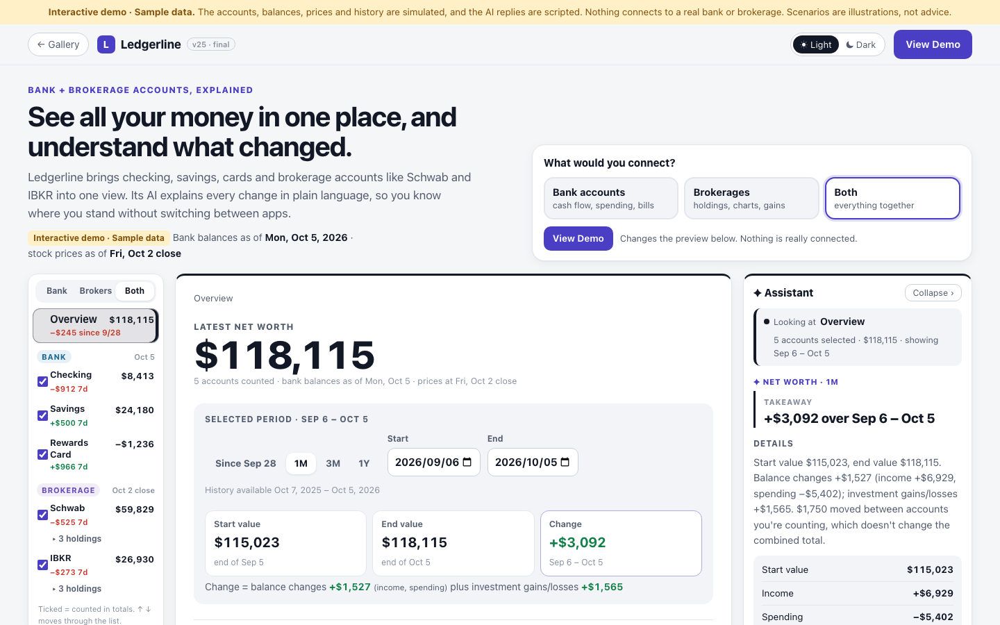

Final version
The version I chose to finish with.

The Connected Workspace
Accounts on the left, the selected account, stock or period in the middle, and an AI assistant on the right that explains it.
Why I chose it
After fifteen exploratory versions, I decided to focus on real user needs and usability, building on what had worked: v01's clear account details, v02's easy-to-understand structure, v08's focus on changes, and v14's what-if feature. Of the four practical directions that followed, I picked v18's overview with an AI panel as the foundation and refined it from v20 to v25. By v24 it had the features I wanted, so I used v25 to make it clearer and more consistent.
What it does
- Latest net worth first, then a selected period (presets or exact dates) explained through income, spending and investment gains
- A breakdown into bank cash, brokerage cash, stocks & ETFs and card debt
- A searchable transaction explorer built from the same sample ledger as the overview
- Holdings with a price chart, average cost and your own gain, kept separate from the stock's performance, plus an Overview / Fundamentals switch: sample company metrics for stocks, fund costs and contents for ETFs
- An assistant that leads with a short takeaway; what-if scenarios are a secondary tool
Earlier versions that shaped it
All versions
Every version is kept as its own page. Each card shows the direction, the main change and what I took from it. The full decision log is under Process.
Process
Three stages, from broad exploration to one refined direction. Open a stage to see each decision.
Broad exploration
I tried fifteen substantially different ways to introduce the product: a data-dense terminal, a chat, a newspaper, a timeline, a money-flow map, a desk, a checkup, a diff, a what-if lab and a weather forecast, among others.
What I kept: v01's account details, v02's clarity, v04's question-led introduction, v08's “since you last checked”, v09's visible money flows, and what-ifs as a supporting tool.
Practical directions
I stopped exploring metaphors and focused on real needs and usability. I built four practical ways to combine what had worked: an account list with details, a weekly check-in, an overview with an AI side panel, and a pick-what-you-connect view.
What I chose: v18's overview and AI panel as the foundation.
Refining the Connected Workspace
I combined v18 with v16's account list, v19's bank/brokerage choice and v08's summary. Then I added stock views, connected context, reliability fixes, net-worth history, exact dates, a transaction explorer and a final clarity pass.
Result: v25, the final version.
Decision log
Stage 1 · Broad exploration v01–v15 · 19 entries
- Starting point → v01
Five directions; I chose The Terminal
The five proposed directions were The Morning Briefing, Pick Your Path, Ask Anything, One Screen Not Six Tabs, and The Terminal. I chose The Terminal for v01.
What I asked for: keep the dark layout and detailed information but make it easy to read, and include bank accounts alongside brokerage accounts so users can choose either or both, with mock data.
- v01 → v02
Two features added, and Pick Your Path tried for comparison
After v01 I asked for a light/dark switch and a calendar of daily investment gains and losses, with each day's amount colored. For comparison with The Terminal I tried Pick Your Path next, leaving v01 unchanged.
- v02 → v03
v02 was easier to understand; v01's investment data was clearer
I especially liked v01's account section: separate bank and brokerage groups, individual balances, checkboxes and quick-select buttons. I asked to carry it into future versions. For v03 I tried One Screen, Not Six Tabs, keeping the light/dark switch and the calendar.
- v03 → v04
v03 felt too similar to what came before
Its overall structure and the order of its sections were too close to the earlier versions. I asked for a bigger change in how the page is organized, using Ask Anything, with two approaches to choose from first.
- v04
I chose approach A: the page is a conversation
I asked for it to be simple enough to understand quickly, with suggested replies, the account picker and calendar appearing naturally in the conversation, and scripted answers with labeled mock data.
- v04 → v05
I liked introducing the product through questions
Next I tried The Morning Briefing: a newspaper-style page with headlines about your money.
- v05 fix
Calendar amounts overlapped
The amounts in v05's calendar were overlapping, and I asked for them to fit on desktop and mobile. The fix went into v05 itself.
- v05 → v06
Creative, but not practical
The newspaper idea was creative, but too much information was packed together. I asked for five more approaches organized differently: Priority Inbox, Zoom In, The Timeline, Money Map and One Card at a Time. I chose Priority Inbox for v06.
- v06 → v06-refined
Too basic, so I refined it within the same direction
I asked for one important item expanded by default with a useful AI explanation and supporting data, more visual hierarchy, and summaries specific to the accounts: simple to use but substantial. I kept the refinement beside v06 as v06-refined and saved v07 for the next new direction.
- v07
Zoom In: one number you can open up
The next new direction starts from net worth and drills into accounts and holdings.
- v08
The Timeline: organized by time
Bank activity and market days share one chronological feed.
- v08 → v09
I liked bringing bank and investment changes together
The “Since you last checked” summary stood out. I would make recent changes more prominent and move upcoming events lower. Next: Money Map.
- v09 → v10
The main money flows were clear without extra clicks
I liked seeing where money comes from and where it goes. Next: One Card at a Time.
- v10 → v11
One card at a time was too restrictive
I'd rather see related financial information together. I asked for five bolder directions: The Money Desk, The Checkup, The Diff, The What-If Lab and Money Weather. I chose The Money Desk.
- v11 → v12
Creative, but the information felt scattered
I liked the desk metaphor, but some text was small and it lacked a clear starting point. If I developed it further, I'd make the account overview and the most important changes stand out, and let items open into a larger view. Next: The Checkup.
- v12 → v13
I wasn't drawn to The Checkup
I kept it in the gallery and moved on to The Diff instead of refining it.
- v13 → v14
Comparing changes is useful, but it looked like a GitHub diff
The target users want to understand their finances and shouldn't need to know coding tools. For v14 I tried The What-If Lab, written for people without technical knowledge.
- v14 → v15
What-ifs are useful, but not the main focus
The what-if tool could work well alongside an account overview and AI analysis. Next: Money Weather.
- v15
Money Weather didn't feel practical
This ended the metaphor exploration.
Stage 2 · Practical directions v16–v19 · 5 entries
- After v15
Focus on real user needs and usability
I decided we had explored enough creative metaphors. I asked for four practical ways to combine what had worked: v01's clear account details, v02's easy-to-understand structure, v08's focus on changes, and v14's what-if feature. Each should help users understand their accounts, see what changed and get useful AI explanations, without fitting every feature into every version.
- v16
Building them one by one
The four directions were A, an account list with details; B, a weekly check-in; C, an overview with an AI side panel; and D, pick what you connect. I chose to build them one by one, starting with A as v16.
- v17
v17: Weekly Check-in
I explored a guided weekly review that puts recent changes first, followed by account details, explanations and upcoming events. This tested whether a fixed reading order could help users understand their finances.
- v18
v18: Overview + AI Panel
I explored keeping the account overview visible alongside an AI assistant. This became the foundation for the final direction because users could inspect their finances and get explanations without leaving the overview.
- v19
v19: Pick What You Connect
I explored a view that adapts to bank accounts, brokerage accounts or both. I carried this account choice into the Connected Workspace so users could focus on the information relevant to them.
Stage 3 · Refining the Connected Workspace v20–v25 · 7 entries
- v20
v18 becomes the foundation
I combined v18's overview and AI panel with the clear account list from v01/v16, the bank/brokerage choice from v19 and v08's “Since you last checked”, keeping the layout focused. I also wanted individual stocks, each with a price chart (simulated 1D, 1W, 1M and 1Y), position details, and a clear difference between the stock's price change and my own gain or loss. The AI panel explains what's selected, with what-ifs as a secondary tab. Bank accounts show cash flow instead of stock charts.
- v21
One connected system, not separate panels
The left column became the context selector, and the center and the assistant update together. The assistant explains the current selection before offering what-ifs, and what-ifs follow the selected account or stock. I also asked for a cross-account overview, keeping v20's look and layout.
- v22
Clarity and reliability
I asked for a headline that explains the product's value, and clear data dates for balances and prices. Scripted what-if questions should run exactly the scenario asked, or offer the available scenarios instead, and empty account selections should be handled the same way everywhere. Checking this turned up a bug: the v21 question box applied a fixed scenario to any “what if” question.
- v23
A clearer picture of overall finances
I asked for:
- a net-worth history chart (1M, 3M, 1Y) that follows the selected accounts, where picking a date or period gives the assistant context
- an asset breakdown separating bank cash, brokerage cash, and stocks and ETFs, with card debt shown separately
- each period's change explained through income, spending and investment gains, with transfers never counted as gains
- more room in the center
- sample history that reconciles with the balances
Reconciling the history corrected two earlier numbers: the card's 7-day change and the “since you last checked” total.
- v24
Flexible dates, spending details, mobile usability
Exact start and end dates are shared by the chart, the breakdown and the assistant. A searchable spending explorer is built from the same ledger. On small screens there's a Manage accounts panel and a clear way back to the overview. Daily and period explanations treat transfers the same way. I left credit-card rewards, live connections and trading for later.
- v25 · final
Clearer and more consistent
v24 had the features I wanted, so I used v25 to make the experience clearer and more consistent:
- one “Interactive demo · Sample data” label instead of repeated tags
- cash flow that follows the selected period, with other timeframes labeled
- spending kept separate from net movement, and a clear account scope, in the transaction explorer
- correct transfer explanations when only the other side is counted, and collapsible filters
- a clearer order: latest net worth, then the period, then details
- AI replies that start with a short takeaway
- a polished investment flow, from brokerage to holding to chart to my own gain
Order placement is left for the future.
- v25 · update
Stock fundamentals and a visual refresh
I asked for one more refinement of v25, keeping the Connected Workspace structure:
- An Overview / Fundamentals switch in the stock details. Stocks show a short company description, market cap, P/E, revenue growth, net profit margin and dividend yield, each explained in plain language with its reporting period. Values that aren't available are shown as unavailable, with the reason.
- ETFs show fund information instead: expense ratio (and what it costs on my holding), dividend yield, top holdings with any overlap with stocks I own directly, and sector allocation.
- A more polished, easier-to-scan interface: a stronger hierarchy from latest net worth to period changes to details, a more compact account list, larger charts, one button style, consistent spacing and type, and restrained colors in both light and dark mode. The assistant still leads with a short takeaway, including on the fundamentals tab.
All fundamentals are sample figures, and price-based metrics use the same Oct 2 close as the rest of the page.
Left for later
Credit-card rewards, live account connections, and trading or order placement. I kept the final version focused on account monitoring and investment analysis.